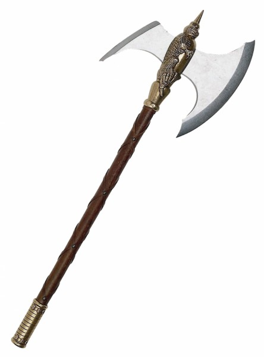

Рубящее оружие предназначалось для разрушения военного обмундирования противника. Такое вооружение имело огромный вес и заостренное лезвие маленького размера. Оружие имело разрушительную мощь, такой эффект достигался благодаря сильному размаху и резкой ударной силе. Данное оружие позволяли себе не все воины, ведь для этого необходимо спортивное телосложение и специальная сноровка, которой обладала меньшая часть войска. В зависимости от колющей разновидности, холодное оружие делилось на два вида — древковое и рукояточное.
Оружие древкового типа
 Самым известным представителем рубящего оружия являлся топор. В боевой экипировке его называли секирой, особенностью которой являлась ударная сила. Из-за этого такое рубящее оружие в то же время относилось к ударной группе. В эту категорию также входят франсиски, гизармы, русские бердыши, косы, американские томагавки, европейские алебарды.
Древковое оружие имело свои черты, которые определялись географическим расположением того или иного государства. К примеру, немецкая барта характеризовалась спаренным лезвием и острым наконечником, азиатская айбалта была известна всему миру полукруглым лезвием. Валашка являлась оружием западнославянской национальности. По внешнему виду она напоминала топор, из-за удобной рукояти использовалась для уничтожения противника в на близком растоянии. Не забывали о нем и в сельскохозяйственной деятельности, используя как трость или вспомогательное орудие труда.
Рукояточный тип рубящего оружия
 Самым известным представителем рубящего оружия являлся топор. В боевой экипировке его называли секирой, особенностью которой являлась ударная сила.
Из-за этого Сюда относятся различные виды кинжалов. Помимо этого, такой тип вооружения захватывает все клинковое холодное оружие, которое по праву считается главной атрибутикой военного оружия Среднего века.
Самым известным представителем рубящего оружия являлся топор. В боевой экипировке его называли секирой, особенностью которой являлась ударная сила.
Из-за этого Сюда относятся различные виды кинжалов. Помимо этого, такой тип вооружения захватывает все клинковое холодное оружие, которое по праву считается главной атрибутикой военного оружия Среднего века.
Меч — особый вид вооружения, имел разные формы и размеры. Для врага это оружие наносило смертельные удары колюще в жизненно важные органы. Он мог быть двуручным или одноручным, полуторным — для ближнего удара или применяться как метательное оружие. К этой категории относятся японская катана, эспадроны, фалькаты, клейморы, фальчионы, бастарды, спатты, франские и скандинавские мечи, двуручные фламберги.